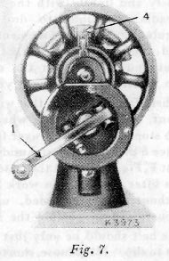
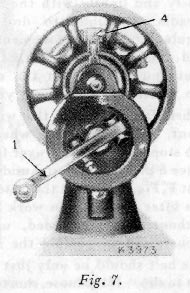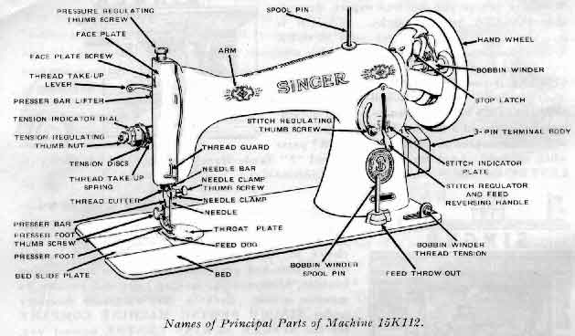
Raise presser foot F by means of presser bar lifter E to prevent injury to the foot F and feed G.
Place a piece of material under presser foot and let the foot down upon it. Turn on electric current and, if the combination knee and foot controller is installed as a knee controller, press knee lever to the right. If controller is placed on the floor to be used as a foot controller, press down on pedal of controller.
The speed of the machine is controlled entirely by the amount of pressure applied to the controller. Operate machine in this way, without being threaded, until you have become accustomed to guiding the material and operating the controller.
When the machine is uncovered, the hand attachment will be found to be out of working position as shown in Fig. 6. Pull the small spring stud 2, and turn the handle back until the lever 1, enters the socket 3. Press back the hinged finger 4, Fig. 7 between the spokes of the wheel. The machine is now ready for working, as shown in Fig.7.
NOTE. Before replacing the cover or the machine in its case, the lever should be disengaged and the handle placed in the position shown in Fig. 6.
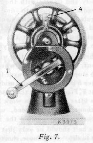
Place a piece of material under the presser foot F, Fig 5, and lower the latter by means of the lifter E.
Now turn the handle over from you to work the machine, without being threaded, until you are accustomed to guiding the material with the left hand.
Loosen the hand wheel by turning stop motion screw 17, Fig. 12, over toward you, place both feet upon the treadle and turn the hand wheel over toward you, at the same time allowing the feet to move freely and lightly with the motion of the treadle.
Continue to do this until a regular and easy movement is acquired and you are able to work the treadle so that you can re-start the machine with the wheel turning toward you.
When familiar with the working movement, tighten the hand wheel by truning the stop motion screw over from you, and place a piece of material under the presser foot F, Fig. 5.
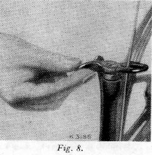Lower the latter by means of the lifter E and again work the machine, without being threaded, until you are accustomed to guiding the material.
The belt should be only just tight enough not to slip. If too loose, shorten and rejoin.
This device simplifies throwing off and replacing the belt. To throw off the belt, move the belt shifter to the left (see Fig. 8), working the treadle at the same time. To replace the belt, work the treadle slowly with the hand wheel turning toward you, when a revolution or two of the wheel will bring the belt back into its place.
For perfect stitching, the thread should be selected according to the fabric to be stitched and the needle must be of the correct size for the thread which must pass freely through eye of needle.
Select the correct needle according to the chart below. Be sure that the needle is not blunt or bent.
CHART SHOWING THE RELATIONSHIP OF TYPES OF FABRICS, THREAD AND NEEDLE SIZES AND MACHINE STITCHES TO THE INCH
|
Types
of Fabrics
|
Thread
Sizes
|
Needle
Sizes
|
Machine Stitches per Inch: Inside Seams |
Machine Stiches per Inch: Outside Seams |
|
Very thin Silk, Muslin, Cambric, Light-weight Delicate
Fabrics, etc.
|
100 to 150 Cotton, 50 Silk, 80 Mercurised Darning
Cotton
|
9
|
20
|
25 to 30
|
|
Fine Calicoes, Linens, Shirtings, Fine Silk Goods,
etc.
|
80 to 100 Cotton, 50 Silk, 50 Mercurised Darning
Cotton
|
11
|
16
|
20
|
|
Plastic Materials
|
50 to 80 Mercurised Cotton
|
11
|
10
|
12
|
|
Shirtings, Sheetings, Bleached Calicoes, Silk and
General Domestic Goods, Light woollen Goods and all classes of general
work
|
60 to 80 Cotton 50 Silk 50 Sylko |
14
|
12
|
18
|
|
All kinds of heavy Calicoes, Drill, Woollen Goods,
etc.
|
40 to 60 Cotton
|
16
|
10
|
12
|
|
Tickings, Heavy Woollens, Trousers, Boy's Clothing,
Corsets, Cloaks, Mantles, Heavy Coats, and Heavy Clothing generally
|
24 to 40 Cotton 60 to 80 Linen |
18 or 19
|
8
|
10
|
|
Bags, Coars Cloths, Canvas, Duck, Heavy Goods of
any texture
|
40 to 60 Linen, or very coarse cotton
|
19 or 21
|
6
|
8
|
See Fig. 10
Raise take-up lever 9 to its highest point.
Place spool of thread on spool pin at top of machine.
Lead thread into notch 5.
Down and from back to front between tension discs 6.
Up over thread guard 7 from behind.
Into the loop of take-up spring 8.
Up and from the back through hole in take-up lever 9.
Down through guide 10 on face plate.
Into guide 11 in needle clamp.
From left to right through eye of needle.
Draw about two inches of thread through eye of needle with which to begin sewing.
Turn the hand wheel toward you until take-up lever 9, Fig. 10, is at its highest point. Withdraw the bed slide plate. Reach down with the left hand and open bobbin case latch K, Fig. 11. Lift out bobbin case. Release catch and remove bobbin from bobbin case.
See Fig. 12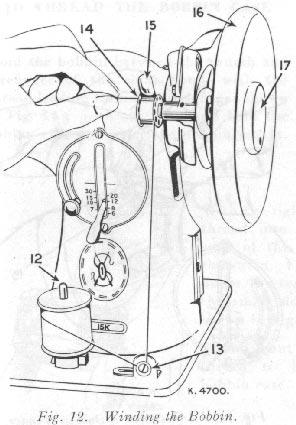
Allow tension discs to control flow of thread. Do not guide or hold thread when winding bobbin.
The bobbin winder will stop automatically when the bobbin is filled.
Remove bobbin from spindle and tighten knurled screw 17.
If pressure of bobbin winder pulley against hub of hand wheel is insufficient for winding the bobbin, press down bobbin winder until latch 15, Fig. 13 drops and holds its position.
Loosen adjusting screw 18, Fig. 13. With forefinger, push back upper end of slotted plate 19 as far as it will go, as 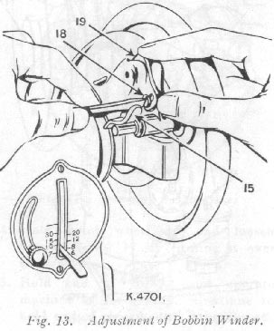shown in Fig. 13, and at the same time, press bobbin winder pulley against hub of hand wheel.
Tighten adjusting screw 18. If thread does not wind evenly on bobbin, loosen screw which holds tension bracket 13, Fig. 12 in postion.
Move bracket to the left if bobbin winds high on right; move bracket to the right if bobbin winds high on left.
When bracket is properly centred, thread will wind evenly across bobbin.
Bobbins can be wound while machine is sewing. Follow Bobbin Winding instructions above, omitting item 4.
Hold the bobbin between the thumb and forefinger of the right hand, with the thread leading from left to right, as shown in Fig. 14; with the left hand hold the bobbin case and place the bobbin into it.
With the right hand draw the thread into the slot in the edge of the bobbin case, as shown in Fig. 15 and back under the tension spring into the small slot at its end , as shown in Fig.16.
Allow about three inches of thread to hang free from the bobbin case.
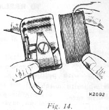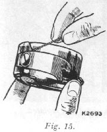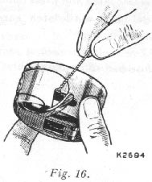
Hold bobbin case bylatch and place it on stud L of shuttle body with position finger M opposite notch at top of shuttle race.
Release latch and press bobbin case back until latch enters groove in stud.
Close bed slide plate.
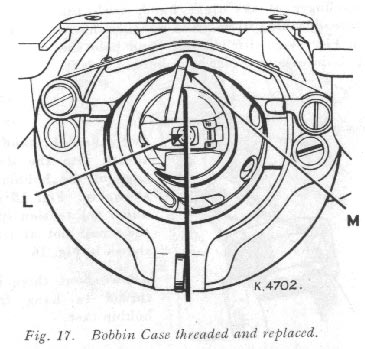